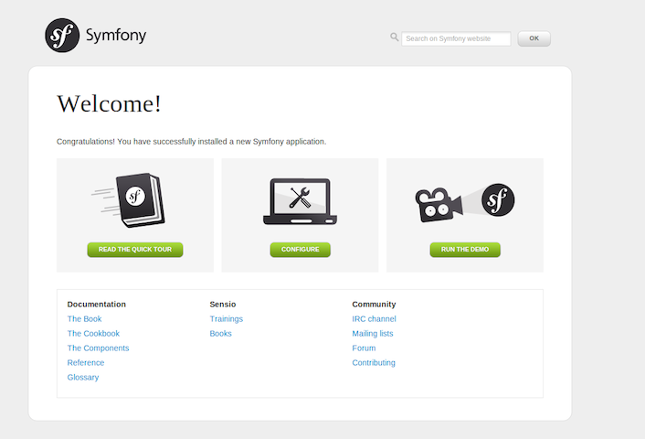

Setup instructions: http://bit.ly/dcon-sf-setup
And ask us for help! :)
Symfony is a group of decoupled components and other standalone PHP libraries.
Then, based on these components, Symfony is also a full-stack web framework.
Dependency Manager for PHP.
It allows you to declare the dependent libraries your project needs and it will install them in your project for you.
$composer create-project symfony/framework-standard-edition sf2.dev 2.3.*
app | The application code and configuration.
bin | Executable code callable from the terminal.
src | Our code and configuration as Bundles.
vendor | The third-party dependencies.
web | The web root public directory
Communication on the web is always a two step process:
A class is a blueprint or set of instructions to build a specific type of object.
class Product
{
private $foo = 'bar';
public function __construct()
{
...
}
}
This type of class has no namespace. It can be referenced in two different ways.
// always works :)
$product = new \Product();
// sometimes works :(
$product = new Product();
Are a way of encapsulating items. Bringing the ability to organize and group related classes and also to avoid name collision.
namespace DrupalCon\FirstBundle\Entity;
class Product
{
private $foo = 'bar';
public function __construct()
{
...
}
}
A namespaced class can be referenced in two different ways.
// reference by its fully-qualified name
$product = new DrupalCon\FirstBundle\Entity\Product();
// import the namespace to file
use DrupalCon\FirstBundle\Entity\Product;
$product = new Product();
A Bundle is a directory that contains the files related to a specific feature in our application, including PHP classes, configuration and asset files as Stylesheets, JavaScript and images.
src/
└── Acme
└── DemoBundle
├── Command
├── Controller
├── DependencyInjection
├── EventListener
├── Form
├── Resources
│ └── config, public, views
├── Tests
│ └── Controller
└── Twig
└── Extension
use Symfony\Component\HttpKernel\Kernel;
use Symfony\Component\Config\Loader\LoaderInterface;
class AppKernel extends Kernel
{
public function registerBundles()
{
...
if (in_array($this->getEnvironment(), array('dev', 'test'))) {
- $bundles[] = new Acme\DemoBundle\AcmeDemoBundle();
...
# AcmeDemoBundle routes (to be removed)
_acme_demo:
resource: "@AcmeDemoBundle/Resources/config/routing.yml"
$ rm -rf src/Acme
No route found for "GET /"
404 Not Found - NotFoundHttpException
<?php
namespace DrupalCon\FirstBundle;
use Symfony\Component\HttpKernel\Bundle\Bundle;
class FirstBundle extends Bundle
{
}
use Symfony\Component\HttpKernel\Kernel;
use Symfony\Component\Config\Loader\LoaderInterface;
class AppKernel extends Kernel
{
public function registerBundles()
{
$bundles = array(
...
new DrupalCon\FirstBundle\FirstBundle(),
);
...
A route is a map from a URL path to a controller.
A controller is a PHP method you create that takes information from the HTTP request and constructs and returns an HTTP response.
Create the 'HelloController' Class & 'index' Action at 'src/FirstBundle/Controller' directory
Create a Route with path to '/' at 'src/FirstBundle/Resources/config/routing.yml' file
Import new file at 'app/config/routing.yml'
Follow this! http://bit.ly/sf2-CreatingPages (step 1 and 2)
<?php
namespace DrupalCon\FirstBundle\Controller;
use Symfony\Component\HttpFoundation\Response;
class HelloController
{
public function indexAction()
{
return new Response('<html><body><h1>Hello World</h1></body></html>');
}
}
hello_plain:
path: /
defaults: { _controller: FirstBundle:Hello:index }
Controller naming pattern 'bundle:controller:action'
You can also use the fully-qualified path name.
_controller: DrupalCon\FirstBundle\Controller\HelloController::indexAction
# app/config/routing.yml
firstbundle:
resource: "@FirstBundle/Resources/config/routing.yml"
prefix: /
// JsonResponse
return new JsonResponse(['key' => 'value']);
// BinaryFileResponse
return new BinaryFileResponse('path/to/file.txt');
// Redirect
return new RedirectResponse('YOUR_PATH');
// throw 404 error
throw new NotFoundHttpException('The product does not exist');
// throw 500 error
throw new \Exception('Something went wrong!');
For convenience, Symfony comes with a base Controller class that assists with some of the most common controller tasks and gives your controller class access to any resource it might need.
Symfony\Bundle\FrameworkBundle\Controller\Controller
Follow this! http://bit.ly/sf2-CreatingPages (step 3)
use Symfony\Bundle\FrameworkBundle\Controller\Controller;
...
class HelloController extends Controller
{
...
{% extends "::base.html.twig" %}
{% block title %}Render a Template{% endblock %}
{% block body %}
You just successfully render a template
{% endblock %}
public function templateAction()
{
return $this->render('FirstBundle:Hello:template.html.twig');
}
hello_template:
path: /template
defaults: { _controller: FirstBundle:Hello:template }
Hello {{name}}
public function nameAction($name) {
return $this->render(
'FirstBundle:Hello:name.html.twig',
[ 'name' => $name ]
);
}
hello_name:
path: /hello/{name}
defaults: { _controller: FirstBundle:Hello:name }
// Gets a service by id. Return an object
get(string $id)
// Returns a RedirectResponse to the given URL.
redirect(string $url, integer $status = 302)
// Returns a rendered view as string.
renderView(string $view, array $parameters = array())
// Renders a view. return a Response instance.
render(string $view, array $parameters = [], Response $response = null)
// Returns a NotFoundHttpException.
createNotFoundException(
string $message = 'Not Found',
Exception $previous = null
)
blog:
path: /blog/{page}
defaults: { _controller: AcmeBlogBundle:Blog:index, page: 1 }
requirements:
page: \d+
blog_show:
path: /blog/{slug}.{_format}
defaults: { _controller: AcmeBlogBundle:Blog:show, _format: html }
requirements:
_format: html|json
contact:
path: /contact
defaults: { _controller: AcmeDemoBundle:Main:contact }
methods: [GET]
contact_process:
path: /contact
defaults: { _controller: AcmeDemoBundle:Main:contactProcess }
methods: [POST]
In order to achieve this three tasks, we are going to take advantage of the Symfony Console Component.
$ php app/console doctrine:generate:entity
The Entity Shortcut Name: FirstBundle:Product
Configuration Format: annotation
Fields:
-- name: name
-- type: string
-- length: 255
-- name: price
-- type: float
hit enter wildly!!! Woh!
(i.e. agree to the default values for everything else)
(if you mess up ctrl + c and start again)
$ php app/console doctrine:generate:crud
Entity Shorcut name: FirstBundle:Product
Generate write actions: yes
hit enter wildly!!! Woh!
(i.e. agree to the default values for everything else!)
Add these lines to import the routes
# app/config/routing.yml
# ...
firstbundle_product:
resource: "@FirstBundle/Controller"
type: annotation
$ php app/console doctrine:database:create
$ php app/console doctrine:schema:create
Database settings are in config parameters file (app/config/parameters.yml)
use DrupalCon\FirstBundle\Entity\Product;
class ProductSerializer {
public function serialize(Product $product) {
$data = [
// Copy code to turn product object into JSON here
];
return $data;
}
}# app/config/config.yml
services:
firstbundle.product_serializer:
class: DrupalCon\FirstBundle\ProductSerializer
public function showJsonAction($id) {
// ...
$productSerializer = $this->container
->get('firstbundle.product_serializer');
$json = $productSerializer->serialize($product);
return new JsonResponse($json);
}
use Symfony\Bundle\FrameworkBundle\Routing\Router;
class ProductSerializer {
private $router;
public function __construct(Router $router) {
$this->router = $router;
}
public function serialize(Product $product) {
$data = [
// ...
'url' => $this->router->generate('product_show', ['id' => $product->getId()])
];
return $data;
}
}
# app/config/config.yml
services:
firstbundle.product_serializer:
class: DrupalCon\FirstBundle\ProductSerializer
arguments: ["@router"]
name: DrupalCon
type: module
description: DrupalCon Training demo
core: 8.x
package: demo
/**
* Implements hook_theme().
*/
function drupalcon_theme() {
$theme = [];
return $theme;
}
$ drupal generate:module
--module=DrupalCon
--machine-name=drupalcon
--module-path=/modules/custom/
--description='DrupalCon Training demo'
--core=8.x
--package=demo
--dependencies=''
--no-interaction
Create the 'HelloController' Class & 'hello' method at 'src/Controller' directory
Create a Route with path to '/drupalcon/hello/{name}' at 'drupalcon.routing.yml' file
namespace Drupal\drupalcon\Controller;
use Drupal\Core\Controller\ControllerBase;
class HelloController extends ControllerBase
{
public function hello($name) {
return [
'#type' => 'markup',
'#markup' => $this->t('Hello: ' . $name)
];
}
}
drupalcon.hello_controller_hello:
path: '/drupalcon/hello/{name}'
defaults:
_controller: '\Drupal\drupalcon\Controller\HelloController::hello'
_title: 'drupalcon Title'
requirements:
_permission: 'access content'
$ generate:controller
--module="drupalcon"
--class-name="HelloController"
--method-name="hello"
--route="/drupalcon/hello/{name}"
--no-interaction
Create the 'hello.html.twig' template file at 'templates' directory
Update the 'drupalcon_theme' function at 'drupalcon.module' file
Update the 'hello' method at 'HelloController' class
Hello {{ name }}!
/**
* Implements hook_help().
*/
function drupalcon_theme() {
$theme['hello_page'] = [
'variables' => ['name' => NULL],
'template' => 'hello',
];
return $theme;
}
public function hello($name) {
return [
'#theme' => 'hello_page',
'#name' => $name
];
}
Create the 'ExampleBlock' class at 'src/Plugin/Block/' directory.
Provide plugin annotation.
Make sure class extends 'BlockBase' class.
Implement 'build' method.
$ drupal generate:plugin:block
--module="drupalcon"
--class-name="ExampleBlock"
--label="example_block"
--plugin-id="example_block"
--no-interaction
namespace Drupal\drupalcon\Plugin\Block;
use Drupal\Core\Block\BlockBase;
/**
* Provides a 'ExampleBlock' block.
*
* @Block(
* id = "example_block",
* admin_label = @Translation("example_block"),
* )
*/
class ExampleBlock extends BlockBase {
public function build() {
$build = [];
$build['example_block']['#markup'] = 'Implement ExampleBlock.';
return $build;
}
}
Create the 'EventForm' class at 'src/Form/' directory.
Make sure class extends 'ConfigFormBase' class.
Implement 'getEditableConfigNames, getFormId, buildForm and submitForm ' methods.
Add a Route to '/admin/config/drupalcon/event' at 'drupalcon.routing.yml' file.
Add a menu link to 'drupalcon.links.menu.yml' file.
namespace Drupal\drupalcon\Form;
use Drupal\Core\Form\ConfigFormBase;
use Drupal\Core\Form\FormStateInterface;
class EventForm extends ConfigFormBase {
protected function getEditableConfigNames() {
return [
'drupalcon.event_config'
];
}
public function getFormId() {
return 'event_form';
}
public function buildForm(array $form, FormStateInterface $form_state) {
$config = $this->config('drupalcon.event_config');
$form['country'] = array(
'#type' => 'textfield',
'#title' => $this->t('Country'),
'#description' => $this->t('Enter country'),
'#default_value' => $config->get('country'),
);
$form['city'] = array(
'#type' => 'textfield',
'#title' => $this->t('City'),
'#description' => $this->t('Enter City'),
'#default_value' => $config->get('city'),
);
$form['date'] = array(
'#type' => 'date',
'#title' => $this->t('Date'),
'#description' => $this->t('Enter date'),
'#default_value' => $config->get('date'),
);
return parent::buildForm($form, $form_state);
}
public function validateForm(array &$form, FormStateInterface $form_state) {
parent::validateForm($form, $form_state);
}
public function submitForm(array &$form, FormStateInterface $form_state) {
parent::submitForm($form, $form_state);
$this->config('drupalcon.event_config')
->set('country', $form_state->getValue('country'))
->set('city', $form_state->getValue('city'))
->set('date', $form_state->getValue('date'))
->save();
}
}
drupalcon.event_form:
path: '/admin/config/drupalcon/event'
defaults:
_form: '\Drupal\drupalcon\Form\EventForm'
_title: 'EventForm'
requirements:
_permission: 'access administration pages'
drupalcon.event_form:
title: 'EventForm'
description: 'Set Default Event data'
route_name: drupalcon.event_form
parent: system.admin_config_system
Create the 'Event' class at 'src' directory.
Register 'Event' class at 'drupalcon.services.yml' file.
Give it a 'getInformation' method.
$ drupal generate:service
--module="drupalcon"
--service-name="drupalcon.event"
--class-name="Event"
--interface="no"
--services="config.factory"
--no-interaction
namespace Drupal\drupalcon;
use Drupal\Core\Config\ConfigFactory;
class Event {
protected $config_factory;
public function __construct(ConfigFactory $config_factory) {
$this->config_factory = $config_factory;
}
}
...
public function getInformation() {
$config = $this->config_factory->get('drupalcon.event_config');
return sprintf(
'DrupalCon is happenig at %s, %s and starts %s',
$config->get('country'),
$config->get('city'),
$config->get('date')
);
}
...
services:
drupalcon.event:
class: Drupal\drupalcon\Event
arguments: ["@config.factory"]
Create the 'EventController' Class at 'src/Controller' directory and Inject the 'drupalcon.event' service
Create the 'EventBlock' class at 'src/Plugin/Block/' directory and Inject the 'drupalcon.event' service.
$ drupal generate:controller
--module="drupalcon"
--class-name="EventController"
--method-name="drupalcon"
--route="/drupalcon"
--services="drupalcon.event"
--no-interaction
namespace Drupal\drupalcon\Controller;
use Drupal\Core\Controller\ControllerBase;
use Drupal\Core\DependencyInjection\ContainerInjectionInterface;
use Symfony\Component\DependencyInjection\ContainerInterface;
use Drupal\drupalcon\Event;
class EventController extends ControllerBase implements ContainerInjectionInterface {
protected $drupalcon_event;
public function __construct(Event $drupalcon_event) {
$this->drupalcon_event = $drupalcon_event;
}
public static function create(ContainerInterface $container) {
return new static(
$container->get('drupalcon.event')
);
}
public function drupalcon() {
return [
'#type' => 'markup',
'#markup' => $this->drupalcon_event->getInformation()
];
}
}
$ dupal generate:plugin:block
--module="drupalcon"
--class-name="EventBlock"
--label="event_block"
--plugin-id="event_block"
--services="drupalcon.event"
--no-interaction
namespace Drupal\drupalcon\Plugin\Block;
use Drupal\Core\Block\BlockBase;
use Drupal\Core\Plugin\ContainerFactoryPluginInterface;
use Symfony\Component\DependencyInjection\ContainerInterface;
use Drupal\drupalcon\Event;
/**
* Provides a 'EventBlock' block.
*
* @Block(
* id = "event_block",
* admin_label = @Translation("event_block"),
* )
*/
class EventBlock extends BlockBase implements ContainerFactoryPluginInterface {
protected $drupalcon_event;
public function __construct(
array $configuration,
$plugin_id,
$plugin_definition,
Event $drupalcon_event
) {
parent::__construct($configuration, $plugin_id, $plugin_definition);
$this->drupalcon_event = $drupalcon_event;
}
public static function create(ContainerInterface $container, array $configuration, $plugin_id, $plugin_definition) {
return new static(
$configuration,
$plugin_id,
$plugin_definition,
$container->get('drupalcon.event')
);
}
public function build() {
$build = [];
$build['event_block']['#markup'] = $this->drupalcon_event->getInformation();
return $build;
}
}
Too many steps and files to create/update.
Better use Console and ask Tess (@socketwench), you know the Drupal 8 Flag use it.
$ drupal generate:entity:content
--module="drupalcon"
--entity-class="Foo"
--entity-name="foo"
--no-interaction